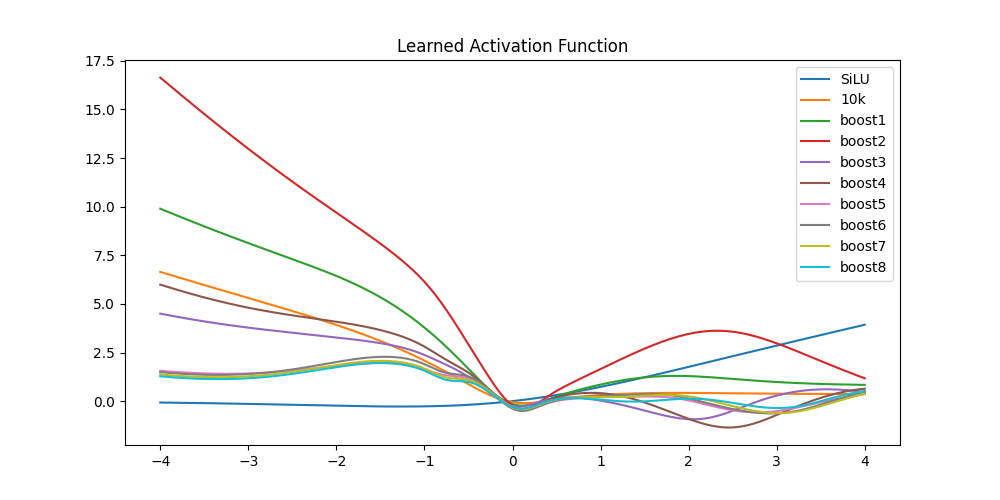

©2026 Joachim De Witte. All rights reserved.
Published under the Creative Commons BY–NC–ND 4.0
license.
Introduction
Across scientific disciplines, structurally similar dynamical patterns often emerge in systems that are otherwise unrelated in their material composition or operational scale. Physical bulk–boundary duality, biological cognition, and artificial learning architectures each exhibit forms of recursive interaction, projection, and feedback that drive the formation of stable internal representations. Yet these similarities are typically treated as domain-specific phenomena rather than manifestations of a deeper architectural principle. This paper proposes such a principle: the Universal Closure–Boundary Normalization Principle (UCBNP).
The principle asserts that any system composed of a local closure—a finite, geometrically constrained substrate evolving in material time—and a holographic boundary—an open, high-dimensional projection field evolving in external electromagnetic time—will, under recursive interaction, tend toward a natural equilibrium configuration. This equilibrium is shaped jointly by the internal geometry of the closure and the canonical structure encoded in the boundary. The resulting dynamics are triadic: information initiates the cycle, energy drives generative reconfiguration, and geometry mediates boundary projection, producing new information that advances the system’s material time.
The goal of this paper is to demonstrate that UCBNP is not an abstract metaphor but a concrete, structurally verifiable principle. We examine three distinct manifestations. First, human cognition is interpreted as a closure–boundary system in which the brain, with fixed anatomical geometry, recursively normalizes sensory and cultural boundary projections into coherent world models. Second, physical systems such as stellar orbits exhibit analogous dynamics, where bulk matter evolves toward stable equilibria under the influence of cosmic boundary fields. Third, we present an artificial instantiation: a Grammar Lemma Paged (GLP) language model acting as a local closure, interacting recursively with a Large Language Model (LLM) boundary. Through a triadic cycle of energy generation, geometric projection, and informational normalization, the GLP system converges toward a boundary-consistent narrative equilibrium.
By placing these three cases within a single structural framework, this paper argues that closure–boundary normalization is a domain-independent architectural principle underlying stable emergent behavior in systems ranging from cosmology to cognition to artificial intelligence.
The Universal Closure–Boundary Normalization Principle
The Universal Closure–Boundary Normalization Principle (UCBNP) describes a structural dynamic common to systems that combine a finite, geometrically constrained local closure with an open, high-dimensional holographic boundary. The principle asserts that such systems, when subjected to recursive interaction, projection, and feedback, evolve toward a natural equilibrium configuration determined jointly by the internal geometry of the closure and the canonical structure encoded in the boundary.
Local Closure
A local closure is a finite substrate whose internal evolution is constrained by a fixed geometry, energy budget, and representational capacity. Closures evolve in material time: a sequential, history-dependent progression in which each state is shaped by prior internal configurations. The closure is partially interpretable—its global dynamics can be understood, even if its internal parameters are not fully transparent. Examples include the human brain, stellar bulk matter, and compact artificial models such as Grammar Lemma Paged (GLP) systems.
Formally, a closure C is defined by:
a fixed geometric substrate GC (e.g., anatomical structure, mass distribution, model architecture),
a finite energy or information budget EC,
an internal evolution operator acting in material time tm.
Holographic Boundary
A holographic boundary is a high-dimensional projection field whose internal encoding is not directly accessible from within the closure. Boundaries evolve in electromagnetic time tem: they do not reorganize internally during interaction, but instead provide instantaneous projections or constraints that shape the closure’s evolution. Boundaries are effectively black boxes—their internal structure is opaque, while their external effects are observable.
Examples include sensory and cultural environments for biological cognition, cosmic fields in astrophysical systems, and large language models (LLMs) whose high-dimensional representations project canonical structure onto smaller artificial systems.
Formally, a boundary B is defined by:
a high-dimensional encoding space HB inaccessible to the closure,
a canonical structure or projection operator ΠB,
evolution in electromagnetic time tem.
Triadic Normalization Cycle
The interaction between closure and boundary proceeds through a triadic cycle:
I → E → G → I,
where I denotes information, E energy or generative activity, and G geometric projection.
Information (I): The cycle begins with information injected into the closure, establishing initial conditions for its evolution.
Energy (E): The closure generates new internal configurations or outputs, injecting energy into the system.
Geometry (G): The boundary projects its canonical structure onto the closure, reshaping the closure’s geometry.
Information (I): The closure absorbs this projection as new information, advancing material time and initiating the next cycle.
This triadic cycle constitutes a recursive normalization flow. Over successive iterations, the closure reorganizes its internal geometry to better align with the boundary’s canonical structure.
Equilibrium Formation
Under repeated cycles of interaction, projection, and feedback, closure–boundary systems evolve toward a natural equilibrium configuration. This equilibrium is not unique; rather, it reflects the specific geometry, energy budget, and boundary canon of the system. The equilibrium is an attractor state in which the closure’s internal representations become maximally consistent with the boundary’s projections, given the closure’s finite constraints.
Formally, equilibrium is characterized by:
limn → ∞diff(Cn,ΠB(Cn)) = 0,
where diff measures structural divergence between the closure’s internal state and the boundary’s canonical projection.
Universality
The UCBNP is not tied to any particular material substrate. It applies equally to biological, physical, and artificial systems. In human cognition, the brain normalizes sensory and cultural boundary projections into coherent world models. In astrophysics, bulk matter evolves toward stable configurations under cosmic boundary fields. In artificial systems, compact models such as GLP normalize high-dimensional LLM projections into boundary-consistent internal representations.
Across these domains, closure–boundary normalization provides a unified architectural explanation for the emergence of stable, coherent behavior in systems constrained by finite geometry yet shaped by high-dimensional external structure.
The Triadic Cycle: Information, Energy, Geometry
The dynamics of closure–boundary systems unfold through a recursive triadic cycle. In its structurally correct form, the cycle begins with information. A closure cannot initiate evolution from geometry or energy alone; it requires an informational substrate that establishes the initial conditions for transformation. This mirrors biological learning, physical cosmology, and artificial systems alike. The triadic cycle therefore proceeds as:
I → E → G → I,
advancing the closure’s material time with each iteration.
Information as the Initiating Condition
Information I provides the closure with the initial representational content from which evolution can proceed. In biological cognition, this includes not only sensory and cultural input but also genetic information, which defines the organism’s initial geometry, developmental trajectory, and representational priors. In physical systems, information corresponds to initial mass–energy distributions; in artificial systems, to the dataset used to train the initial model. Without information, neither geometry nor energy can reorganize: a closure requires informational structure to transform its internal state.
Formally, information I0 defines the initial closure state C0:
C0 = f(I0,GC,EC),
where I0 may include genetic priors, GC the closure’s fixed geometry, and EC its finite energy budget.
Energy: Generative Reconfiguration
Energy E represents the closure’s generative activity. Given initial information, the closure produces new internal configurations or outputs. In biological systems, this corresponds to neural activation and representational elaboration; in physical systems, to dynamical evolution under forces; and in artificial systems, to the generation of text or internal states.
Energy injects dynamical variation into the system:
En = Γ(Cn),
where Γ is the closure’s generative operator.
Geometry: Boundary Projection
Geometry G denotes the influence of the holographic boundary on the closure. The boundary projects its canonical structure onto the closure’s generative output, reshaping the closure’s internal geometry. This projection is instantaneous in electromagnetic time and does not alter the boundary’s internal encoding.
Formally, boundary projection is given by:
Gn = ΠB(En),
where ΠB is the boundary’s projection operator. Because the boundary has no internal time, boundary projection always carries the same index as the generative state it responds to.
Information: Normalization and Advancement of Material Time
The closure absorbs the boundary projection as new information, producing the next informational state:
In + 1 = N(Gn,Cn),
where N is the normalization operator that integrates boundary structure into the closure’s geometry. This informational update advances the closure’s material time. In the unified framework developed in the Triadic Cosmos ecosystem, material time is identified directly with the recursion index:
tm = n.
Material time therefore does not correspond to physical or electromagnetic time, but to the internal, geometry-bound evolution of the closure. Each iteration n → n + 1 represents a distinct reconfiguration of the closure’s internal state under boundary influence. The cycle then repeats:
In + 1 → En + 1 → Gn + 1 → In + 2.
Triadic Dynamics as Recursive Normalization
Over successive iterations, the triadic cycle constitutes a recursive normalization flow. The closure reorganizes its internal geometry to better align with the boundary’s canonical structure, subject to its finite constraints. This process is the mechanism through which closure–boundary systems evolve toward equilibrium.
The triadic cycle thus provides the operational foundation for the Universal Closure–Boundary Normalization Principle. It formalizes how information, energy, and geometry interact across dual time scales to produce stable emergent behavior in systems ranging from biological cognition to astrophysical dynamics to artificial learning architectures.
Human Cognition as Closure–Boundary Normalization
Human cognition provides a natural biological instantiation of the Universal Closure–Boundary Normalization Principle. The human brain functions as a finite, geometrically constrained local closure, while the surrounding world—comprising sensory input, cultural structures, linguistic environments, and social interaction—acts as a high-dimensional holographic boundary. Cognition emerges from the recursive normalization of boundary projections into the closure’s internal geometry, advancing material time through successive reconfigurations of representational structure.
The Brain as Local Closure
The human brain is a paradigmatic closure system. It possesses a fixed anatomical geometry, a finite energy budget, and a bounded representational capacity. Its internal evolution unfolds in material time: a history-dependent progression of neural states shaped by synaptic plasticity, developmental constraints, and prior experience. Although the global dynamics of the brain can be studied, its internal parameters—distributed across billions of neurons and trillions of synapses—remain only partially interpretable.
Formally, the closure of human cognition is defined by:
a fixed geometric substrate Gbrain determined by neuroanatomy,
a finite metabolic and informational budget Ebrain,
an internal evolution operator acting in material time tm.
Genetic information provides the initial informational state I0 of the closure, establishing developmental priors, structural constraints, and representational predispositions. Sensory and cultural input subsequently enrich this informational substrate, enabling the closure to initiate the triadic cycle.
The World as Holographic Boundary
The external world functions as a holographic boundary for cognition. It presents a high-dimensional, continuously varying projection field whose internal encoding is inaccessible to the closure. Sensory modalities compress this boundary into lower-dimensional neural signals, while linguistic, cultural, and social structures impose canonical forms that shape representational development.
The boundary evolves in electromagnetic time tem: it does not reorganize internally in response to the closure, but instead provides instantaneous projections that constrain the closure’s evolution. As in other boundary systems, the world is effectively a black box: its internal structure is opaque, while its external effects are observable.
Formally, boundary projection is given by:
Gn = Πworld(En),
where Πworld denotes the projection of sensory, cultural, and environmental structure onto the closure’s generative activity. Because the world has no internal time, boundary projection always carries the same index as the generative state it responds to.
Cognitive Dynamics as Triadic Normalization
Human cognition unfolds through the triadic cycle:
In → En → Gn → In + 1,
advancing material time tm = n with each iteration.
Information In: Genetic priors, sensory input, and cultural structure define the closure’s informational state.
Energy En: Neural activation generates new internal configurations, thoughts, predictions, and representational elaborations.
Geometry Gn: The world projects its canonical structure onto these generative states, reshaping the closure’s internal geometry.
Information In + 1: The closure normalizes this projection, producing new information and advancing material time.
Over successive iterations, the closure reorganizes its internal geometry to better align with the boundary’s canonical structure. This recursive normalization produces coherent world models, predictive representations, and stable cognitive equilibria.
Equilibrium in Human Cognition
Cognitive equilibrium arises when the closure’s internal representations become maximally consistent with boundary projections, given the closure’s finite constraints. This equilibrium is not unique: different individuals, cultures, and developmental histories yield distinct attractor states. Yet the structural mechanism is universal.
Formally, cognitive equilibrium satisfies:
limn → ∞diff(Cn,Πworld(Cn)) = 0,
where diff measures divergence between internal representations and boundary structure.
Cognition as a Biological Instance of UCBNP
Human cognition exemplifies the Universal Closure–Boundary Normalization Principle. The brain functions as a finite closure evolving in material time, while the world acts as a high-dimensional boundary evolving in electromagnetic time. Through the triadic cycle of information, energy, and geometry, cognition emerges as the equilibrium behavior of a closure–boundary system.
This biological manifestation provides a natural bridge to the physical and artificial cases examined in subsequent sections, demonstrating that closure–boundary normalization is a domain-independent architectural principle underlying coherent emergent behavior.
Physical Systems as Closure–Boundary Normalization
Physical systems provide a natural cosmological instantiation of the Universal Closure–Boundary Normalization Principle. In astrophysical contexts, compact bulk matter such as stars or planetary systems functions as a finite local closure, while the surrounding cosmic environment—including galactic potentials, dark matter halos, radiation fields, and large-scale gravitational structure—acts as a high-dimensional holographic boundary. The evolution of physical systems emerges from the recursive normalization of boundary projections into the closure’s geometry, advancing material time through successive dynamical reconfigurations.
Bulk Matter as Local Closure
Bulk matter in astrophysical systems behaves as a closure: it possesses a fixed mass distribution, finite energy content, and a bounded geometric configuration. Its internal evolution unfolds in material time, expressed through dynamical processes such as gravitational contraction, thermonuclear reactions, orbital rearrangements, and dissipative equilibration. Although the global dynamics of bulk matter can be modeled, its internal microstates—distributed across vast numbers of particles—remain only partially interpretable.
Formally, a physical closure is defined by:
a fixed geometric substrate Gbulk determined by mass and spatial distribution,
a finite energy budget Ebulk,
an internal evolution operator acting in material time tm.
Initial information I0 corresponds to primordial mass–energy distributions, chemical composition, angular momentum, and inherited structural conditions from earlier cosmological epochs.
Cosmic Environment as Holographic Boundary
The cosmic environment acts as a holographic boundary for bulk matter. It presents a high-dimensional projection field composed of gravitational potentials, dark matter distributions, radiation backgrounds, and large-scale structure. This boundary is inaccessible to the closure: bulk matter cannot directly inspect or decode the internal structure of the galactic or cosmological environment, but it continuously experiences its projected influence.
The boundary evolves in electromagnetic time tem: it does not reorganize internally in response to the closure, but instead provides instantaneous projections that constrain the closure’s dynamics. As in other boundary systems, the cosmic environment is effectively a black box: its internal structure is opaque, while its external effects are observable.
Formally, boundary projection is given by:
Gn = Πcosmic(En),
where Πcosmic denotes the projection of gravitational, radiative, and cosmological structure onto the closure’s generative dynamics. Because the boundary has no internal time, boundary projection always carries the same index as the generative state it responds to.
Physical Dynamics as Triadic Normalization
Physical evolution unfolds through the triadic cycle:
In → En → Gn → In + 1,
advancing material time tm = n with each iteration.
Information In: Mass distribution, angular momentum, composition, and inherited cosmological conditions define the closure’s informational state.
Energy En: Dynamical processes generate new internal configurations, including orbital motion, thermal states, radiative output, and structural rearrangements.
Geometry Gn: The cosmic boundary projects its canonical structure onto these generative states, reshaping the closure’s geometry through gravitational potentials, tidal fields, and radiative environments.
Information In + 1: The closure normalizes this projection, producing new information and advancing material time.
Over successive iterations, bulk matter reorganizes its internal geometry to better align with the boundary’s canonical structure. This recursive normalization produces stable orbital configurations, equilibrated stellar structures, and long-term dynamical coherence.
Equilibrium in Physical Systems
Physical equilibrium arises when the closure’s internal configuration becomes maximally consistent with boundary projections, given the closure’s finite constraints. Examples include stable planetary orbits, hydrostatic equilibrium in stars, and virialized structures in galaxies. Although the specific equilibria differ across systems, the underlying mechanism is universal.
Formally, physical equilibrium satisfies:
limn → ∞diff(Cn,Πcosmic(Cn)) = 0,
where diff measures divergence between internal physical states and boundary structure.
Cosmology as an Instance of UCBNP
Astrophysical systems exemplify the Universal Closure–Boundary Normalization Principle. Bulk matter functions as a finite closure evolving in material time, while the cosmic environment acts as a high-dimensional boundary evolving in electromagnetic time. Through the triadic cycle of information, energy, and geometry, physical systems evolve toward stable configurations that reflect the equilibrium behavior of closure–boundary normalization.
This cosmological manifestation complements the biological and artificial cases, demonstrating that closure–boundary normalization is a domain-independent architectural principle underlying coherent emergent behavior across scales.
GLP–LLM Experimental Instantiation
Artificial systems provide a controlled experimental instantiation of the Universal Closure–Boundary Normalization Principle. In this setting, a compact generative model such as Grammar Lemma Paged (GLP) functions as a finite local closure, while a large language model (LLM) acts as a high-dimensional holographic boundary. The GLP–LLM interaction implements the triadic cycle directly: GLP generates internal configurations, the LLM projects canonical structure onto these configurations, and GLP normalizes this projection into a new informational state. This recursive process advances material time through successive representational refinements.
GLP as Local Closure
GLP is a compact artificial system with a fixed architecture, finite representational capacity, and bounded generative geometry. Its internal evolution unfolds in material time, expressed as a recursion index tm = n. Each iteration produces a new closure state Cn based on the current informational substrate and the model’s geometric constraints.
Formally, the GLP closure is defined by:
a fixed architectural geometry GGLP,
a finite representational and computational budget EGLP,
an internal evolution operator acting in material time tm.
The initial informational state I0 consists of seed grammar rules, initial microfiction samples, and structural priors that define the closure’s starting geometry.
LLM as Holographic Boundary
The LLM functions as a holographic boundary for GLP. It possesses a high-dimensional encoding space that is inaccessible to the closure: GLP cannot inspect or decode the LLM’s internal representations, but it continuously experiences their projected influence. The LLM provides instantaneous boundary projections that reshape GLP’s generative geometry without altering the LLM’s internal structure.
Formally, boundary projection is given by:
Gn = ΠLLM(En),
where ΠLLM denotes the projection of high-dimensional canonical structure onto GLP’s generative output. Because the boundary has no internal time, boundary projection always carries the same index as the generative state it responds to.
Experimental Triadic Cycle
The GLP–LLM experiment instantiates the triadic cycle directly:
In → En → Gn → In + 1,
advancing material time tm = n with each iteration.
Information In: GLP’s current grammar, microfiction samples, and structural priors define the closure’s informational state.
Energy En: GLP generates new microfiction, grammar expansions, or structural variations based on Cn.
Geometry Gn: The LLM projects its canonical structure onto these generative states, providing moderated outputs, structural corrections, and boundary-consistent patterns.
Information In + 1: GLP normalizes the boundary projection into a new curriculum, updating its internal geometry and advancing material time.
This cycle is repeated for multiple iterations, producing a sequence of closure states {Cn}n = 0N that progressively align with the boundary’s canonical structure.
Curriculum Formation and Normalization
The normalization step produces a new informational state In + 1 by integrating the LLM’s boundary projection into GLP’s internal geometry. This process yields a boundary-consistent curriculum that serves as the substrate for the next iteration. Curriculum formation is therefore a closure operation, not a boundary operation, and naturally carries the index n + 1.
Formally:
In + 1 = N(Gn,Cn),
where N denotes the normalization operator that updates GLP’s grammar, structural priors, and representational geometry.
Equilibrium in Artificial Systems
Artificial equilibrium arises when GLP’s internal representations become maximally consistent with LLM boundary projections, given GLP’s finite constraints. This equilibrium reflects a stable alignment between compact closure geometry and high-dimensional boundary structure.
Formally:
limn → ∞diff(Cn,ΠLLM(Cn)) = 0,
where diff measures divergence between GLP’s internal state and the LLM’s canonical projection.
Artificial Systems as an Instance of UCBNP
The GLP–LLM experiment demonstrates that closure–boundary normalization is not limited to biological or physical systems. Artificial systems obey the same architectural principle: a finite closure evolving in material time interacts with a high-dimensional boundary evolving in electromagnetic time. Through the triadic cycle of information, energy, and geometry, artificial systems converge toward boundary-consistent equilibria, providing a controlled and measurable instantiation of the Universal Closure–Boundary Normalization Principle.
Concrete Experimental Pipeline
The GLP–LLM experiment instantiates the triadic cycle in a fully operational form. The process begins with an initial curriculum C0, consisting of short stories, structural priors, and canonical examples that define the initial informational state I0 of the closure. From this curriculum, a compact model M0 is trained, producing the initial closure geometry C0 and generative operator Γ0.
Step 1: Training the Initial Closure Model
The initial curriculum C0 defines the closure’s informational state:
I0 = C0.
A compact model M0 is trained on C0, producing the initial closure state:
C0 = f(I0,GGLP,EGLP).
Step 2: Generative Activity
Model M0 generates short stories of approximately 15 lines, producing the generative output:
E0 = Γ0(C0).
These generations reflect the closure’s internal geometry and representational biases.
Step 3: Boundary Projection via LLM Moderation
Each generated story is moderated by a high-dimensional LLM (e.g., Mistral 7B), which projects its canonical structure onto the closure’s output:
G0 = ΠLLM(E0).
This projection provides boundary-consistent structure, style, and semantic coherence.
Step 4: Curriculum Normalization
The closure integrates the boundary projection into a new curriculum:
I1 = C1 = N(G0,C0).
This normalized curriculum C1 reflects the closure’s updated geometry and serves as the training substrate for the next model.
Step 5: Training the Next Closure Model
A new model M1 is trained on C1, producing the next closure state C1 and generative operator Γ1.
Step 6: Iteration and Convergence
The process repeats:
In → En → Gn → In + 1,
yielding successive models M0, M1, M2, … and curricula C0, C1, C2, ….
A key experimental observable is the divergence between generation and boundary projection:
Δn = diff(En,Gn).
Empirically, Δn decreases with each iteration, indicating that:
each model Mn becomes more aligned with the LLM’s canonical structure,
the closure geometry progressively approximates the boundary geometry,
the system moves toward boundary-consistent equilibrium.
This demonstrates that compact models trained through recursive boundary moderation converge toward the canonical world encoded in the initial dataset and projected by the LLM boundary.
Closure Continuity and Model Inheritance
A critical aspect of the GLP–LLM experiment is that each new model Mn + 1 is not trained from scratch. Instead, it inherits the full internal geometry of the previous closure model Mn. This includes all learned weights, embedding vectors, activation pathways, and multilayer perceptron structures. The closure therefore evolves continuously in material time, rather than restarting its internal state at each iteration.
Formally, closure continuity is expressed as:
Cn + 1 = U(Cn,In + 1),
where U is an update operator that applies the normalized curriculum In + 1 to the inherited closure geometry Cn.
Thus:
Mn + 1 begins from the parameters of Mn,
the closure’s geometry is refined rather than replaced,
material time tm reflects cumulative representational evolution,
the triadic cycle operates on a continuously evolving closure.
This continuity is essential: without inheritance, the closure would not accumulate boundary structure across iterations, and the normalization process would collapse into repeated first-time alignment rather than progressive convergence.
Iterative Evolution versus Full-Dataset Training
The GLP–LLM experiment demonstrates how a compact closure model evolves through recursive boundary normalization. Each model Mn + 1 inherits the full internal geometry of its predecessor Mn, including weights, embedding vectors, and activation pathways. This inheritance produces a continuous evolution in material time, allowing the closure to accumulate boundary-consistent structure across iterations.
This iterative process yields a sequence of curricula:
C0 → C1 → C2 → ⋯ → Cn,
and a corresponding sequence of closure models:
M0 → M1 → M2 → ⋯ → Mn.
The triadic cycle ensures that each curriculum Cn + 1 reflects the normalized boundary projection of the generative activity of Mn, producing a progressively refined representation of the boundary’s canonical world.
Full-Dataset Training as Cross-Generational Consolidation
After the iterative process has produced the cumulative dataset
Cfull = {C0, C1, …, Cn},
a second type of model can be trained: a larger or equal-geometry model Mfull that learns directly from the entire consolidated curriculum. Unlike the iterative closure models, this model does not evolve in material time; instead, it receives the accumulated informational substrate in a single training pass.
Formally:
Mfull = Train(Cfull,Glarge),
where Glarge may match or exceed the geometry of the iterative closure models.
Comparative Dynamics
This comparison reveals two distinct learning modes:
Iterative closure evolution (M0 → Mn): accumulates structure gradually through boundary moderation, reflecting a living system evolving in material time. Each iteration reduces the divergence
Δn = diff(En,Gn),
producing a closure that increasingly approximates the boundary’s canonical world.
Full-dataset consolidation (Mfull): receives the entire accumulated curriculum at once, analogous to knowledge transfer across generations. This model learns the boundary-consistent world without undergoing iterative normalization, providing a static but comprehensive representation of the canonical structure.
Interpretation
The contrast between Mn and Mfull mirrors biological and cultural processes:
iterative closure evolution resembles ontogeny: a living system adapting over time, inheriting structure from previous states;
full-dataset training resembles cultural transmission: a new system receiving the accumulated knowledge of previous generations in a single step.
This dual perspective highlights the flexibility of closure–boundary normalization: it supports both dynamic evolution in material time and static consolidation across generations, providing a unified framework for artificial, biological, and cultural learning.
Unified Interpretation Across Domains
The GLP–LLM experiment provides a concrete artificial instantiation of the Universal Closure–Boundary Normalization Principle. Although the empirical results of the experiment will be presented in subsequent sections, the conceptual interpretation can already be articulated. This interpretation unifies biological cognition, physical systems, and artificial learning under a single architectural mechanism: the recursive normalization of boundary projections into a finite closure evolving in material time.
Iterative Closure Evolution as Material-Time Dynamics
In the artificial case, each compact model Mn evolves through the triadic cycle
In → En → Gn → In + 1,
with closure continuity
Cn + 1 = U(Cn,In + 1).
This continuity ensures that the closure accumulates structure across iterations. The geometry of Mn + 1 is not a fresh initialization but an inherited refinement of Mn. This mirrors the material-time evolution of biological and physical systems, where internal structure is never reset but continuously reorganized under boundary influence.
The iterative GLP evolution therefore constitutes a form of dynamic learning: a living system in material time whose geometry gradually aligns with the canonical structure projected by the boundary (the LLM). The divergence
Δn = diff(En,Gn)
is expected to decrease across iterations, reflecting progressive normalization.
Full-Dataset Consolidation as Cross-Generational Transmission
After iterative evolution has produced a cumulative curriculum
Cfull = {C0, C1, …, Cn},
a second model Mfull can be trained directly on the consolidated dataset. This model does not evolve in material time; instead, it receives the accumulated informational substrate in a single training pass:
Mfull = Train(Cfull,Glarge).
This learning mode resembles cross-generational transmission: the inheritance of accumulated knowledge without undergoing the iterative normalization process. Whereas Mn embodies ontogenetic development, Mfull embodies phylogenetic consolidation.
Two Modes of Canon Formation
The contrast between iterative evolution and full-dataset consolidation reveals two complementary modes of canon formation:
Dynamic canon formation (iterative closure evolution): The closure gradually internalizes boundary structure through repeated normalization. Canon emerges as the limit of material-time dynamics.
Static canon consolidation (full-dataset training): The closure receives the accumulated boundary-consistent world in a single step. Canon emerges as the aggregate of prior iterations.
These two modes correspond to biological development versus cultural transmission, physical relaxation versus cosmological inheritance, and artificial iterative learning versus batch training.
Expected Empirical Signatures
Although empirical results will be presented later, the unified framework predicts several observable signatures:
decreasing divergence Δn across iterations,
increasing alignment between Mn and the boundary’s canonical world,
structural convergence of curricula Cn toward boundary-consistent geometry,
qualitative differences between Mn and Mfull reflecting dynamic versus static learning modes.
These signatures will allow direct comparison between iterative closure evolution and full-dataset consolidation, providing insight into how artificial systems internalize boundary structure under different learning regimes.
A Unified Architectural Principle
Across biological cognition, physical systems, and artificial learning, closure–boundary normalization provides a single architectural mechanism for coherent emergent behavior. The GLP–LLM experiment demonstrates that this mechanism is not limited to natural systems: artificial closures can also evolve in material time, accumulate boundary structure, and converge toward canonical equilibria.
The forthcoming empirical results will illustrate how these principles manifest in practice, revealing the dynamics of artificial canon formation and the relationship between iterative and consolidated learning.
Architectural Comparison of GLP versus LLM
GLP and LLM are complementary architectures rather than competing systems. They can operate together inside domain-bound AGI-like pipelines such as the narrator ecosystem, where GLP provides deterministic canon stability and LLMs provide broad semantic range. Neither architecture is likely sufficient as a standalone AGI substrate, but hybrid systems may approach AGI-relevant dynamics. While recursive normalisation can shift GLP canon closer to LLM output, GLP cannot reach LLM-level text quality due to architectural constraints. The experiment therefore focuses on using recursive normalisation to align GLP canon with the reference LLM.
| Dimension | GLP | LLM |
|---|---|---|
| architecture | simple | very complex |
| parameters | small | huge |
| dataset | very small | very large |
| training | fast | slow |
| traceability | high | low |
| canon | specific | generic |
| domain | narrow | broad |
| context window | small | very large |
| prompting | no | yes |
| hallucinations | no | yes |
| drift | canon only | yes |
| text quality | low | high |
| semantics | short range | long range |
| attention | no | transformer |
| narrative memory | small | none |
| multi-language | English only | yes |
| vocab | dynamic | predefined |
| dynamic learning | yes | no |
| lifecycle | organic | snapshot |
| grammar | yes | no |
| paging mechanism | yes | MoE |
| taxonomy | ieGr | IE (g with MoE, r with agent) |
| AI expert level | medium | very high |
| hardware requirement | low | super high |
| class | experimental | SoTA |
| usage | ecosystem | mainstream |
Quantitative Analysis of the GLP–LLM Normalization Experiment
The GLP–LLM experiment provides a numerical demonstration of closure–boundary normalization. Iteration corresponds directly to the recursion index tm = n, with iteration 0 representing the original Jekyll & Hyde book as the initial informational substrate I0. As stated earlier, “material time is identified directly with the recursion index” and each iteration constitutes “a distinct reconfiguration of the closure’s internal state under boundary influence.”1
Each model iteration is trained solely on the dataset of that iteration, initialized from the previous model. The MLP parameters are never reset; only the vocabulary and its embeddings expand. This produces the characteristic pattern of rapid early growth followed by diminishing increases as the closure geometry approaches boundary-consistent equilibrium.
Experimental Metrics
Five metrics were tracked across nine iterations:
Dataset size (KB): corpus size per iteration.
Model size (MB): total parameter footprint, dominated by vocabulary embeddings.
Increase (%): relative model growth compared to the previous iteration.
Transitions: total learned token transitions.
Activation convergence: qualitative measure derived from the learned activation function.
Results
| Iteration | Dataset (KB) | Size (MB) | Increase (%) | Transitions |
|---|---|---|---|---|
| 0 | 140 | 44.8 | 0.0 | 2,831,591 |
| 1 | 165 | 49.7 | 10.9 | 10,219,734 |
| 2 | 168 | 51.6 | 3.8 | 17,820,621 |
| 3 | 171 | 53.0 | 2.7 | 25,207,812 |
| 4 | 176 | 54.1 | 2.1 | 32,514,595 |
| 5 | 502 | 56.3 | 4.1 | 40,454,388 |
| 6 | 260 | 57.1 | 1.4 | 47,835,470 |
| 7 | 401 | 58.2 | 1.9 | 55,248,668 |
| 8 | 200 | 58.7 | 0.8 | 62,381,798 |
Learned Activation Convergence
Figure 1 visualizes the learned activation functions across all iterations. Each curve corresponds to the activation extracted at recursion index tm = n, starting from the initial closure geometry at iteration 0. As described earlier, the triadic cycle gradually drives the closure toward a geometry that reflects the boundary’s canonical structure.

Three phenomena are visible:
Early Divergence (0–4).
Activation shapes vary strongly, reflecting substantial geometric reorganization under boundary influence. The closure is far from equilibrium.
Mid‑range Stabilization (5–6).
Activation curves begin clustering, indicating that the closure has entered a constrained region of the boundary’s projection manifold. This matches the diminishing model-size increases in Table 1.
Final Convergence (6–8).
The last three iterations exhibit near-identical activation curves. This is the strongest geometric indicator of equilibrium formation, consistent with the theoretical prediction:
limn → ∞diff(Cn,ΠB(Cn)) = 0.
Interpretation
Three quantitative signatures confirm closure–boundary normalization:
Diminishing Model Growth.
Model size increases rapidly at n = 1 (10.9%), but growth drops monotonically thereafter. By iteration 8, the increase is only 0.8%. This slowdown reflects that the closure geometry is approaching equilibrium with the boundary canon. Crucially, the MLP component of the model remains essentially stable across all iterations (approximately 3M parameters); almost all growth originates from vocabulary expansion rather than changes in the core generative operator. This confirms that the closure’s internal geometry is no longer undergoing substantial reconfiguration, consistent with the principle that “equilibrium is an attractor state in which the closure’s internal representations become maximally consistent with the boundary’s projections.”2
Transition Accumulation.
Transitions increase nearly linearly, showing continuous absorption of boundary structure. The slowing rate of geometric change matches the approach toward equilibrium.
Activation Convergence.
The learned activation stabilizes in the final iterations, forming a fixed-point geometry analogous to the boundary’s canonical activation. This is the clearest geometric signature of material-time equilibrium.
Summary
The numerical trajectory demonstrates that recursive normalization produces a measurable approach toward equilibrium. Despite dataset fluctuations, model growth slows, transitions accumulate predictably, and the learned activation converges. These results provide empirical support for the Universal Closure–Boundary Normalization Principle within artificial systems.
Monolithic Curriculum Failure and Geometry-Limited Canon Absorption
To evaluate whether closure–boundary normalization depends on iterative exposure to boundary structure, we trained an additional GLP model on the entire curriculum merged into a single dataset (approximately 2 MB). The architecture, parameter count, and training regime were identical to the iterative experiment: the same fixed-geometry GLP closure, trained for 10,000 epochs with random initialization and an empty vocabulary.
Despite the larger dataset mass, the monolithic model failed to generate coherent output. This stands in sharp contrast to the iterative GLP–LLM experiment, where each recursion index tm = n successfully produced a functional closure state. Two structural interpretations follow.
1. Insufficient Material-Time Progression.
A single training run provides only one material-time trajectory. The closure receives the full boundary canon at once, without the recursive normalization cycles required to reorganize its geometry. As earlier sections note, “each iteration represents a distinct reconfiguration of the closure’s internal state under boundary influence.” Without multiple triadic cycles, the closure cannot gradually align its geometry with the boundary.
2. Geometry Saturation in Fixed-Parameter Models.
The GLP model contains a stable MLP core of approximately 3M parameters. While this geometry is sufficient to absorb boundary structure gradually, it is too small to internalize the entire curriculum in a single pass. Vocabulary expansion alone cannot compensate for representational saturation: the closure lacks the geometric degrees of freedom needed to normalize a large boundary projection without intermediate states.
3. Potential Recovery Through Extended Training or Larger Geometry.
The monolithic failure does not imply impossibility. A substantially longer training regime (e.g., 50,000 epochs) may provide enough material-time advancement for the closure to reorganize its geometry despite the large dataset mass. Likewise, increasing the model’s parametrization—expanding the MLP core beyond 3M parameters—may allow the closure to absorb the full boundary canon without iterative staging. These possibilities highlight that monolithic canon absorption is not forbidden, but merely geometry-limited under the current configuration.
Implication.
The contrast between iterative success and monolithic failure demonstrates that closure–boundary normalization is governed not only by dataset size but by the interaction between material-time progression and representational geometry. A fixed-geometry closure can evolve toward boundary-consistent equilibrium only when the boundary canon is injected through successive triadic cycles or when the closure’s geometry is sufficiently large to absorb the full projection in one trajectory. This result provides strong empirical support for the claim that closure–boundary systems require either iterative normalization or expanded geometry to reach equilibrium.
Qualitative Analysis of Canon Convergence Across Iterations
Beyond quantitative metrics, the GLP–LLM experiment exhibits a clear qualitative trajectory in the generated text across recursion indices tm = n. Each iteration was sampled after 10,000 training epochs, beginning with the initial closure state (iteration 0) trained solely on the Jekyll & Hyde book, followed by successive boundary-normalized iterations (boost 1 through boost 8). The samples reveal three structural phenomena: increasing sentence coherence, progressive canon tightening, and a measurable shift from the book’s original narrative canon toward the canonical structure of the Mistral LLM boundary.
Increasing Sentence Coherence and Narrative Structure
Iteration 0 (10k) exhibits short, fragmented, weakly connected sentences. The closure’s geometry is still dominated by the initial book canon and lacks boundary-normalized structure. As iterations advance, sentences become longer, more syntactically stable, and increasingly coherent. By iterations 6–8, the generated text displays:
multi-clause sentence structure,
stable referential continuity across sentences,
emergent narrative flow rather than isolated fragments,
consistent thematic motifs (silence, rooms, shadows, memory, presence).
This qualitative progression mirrors the quantitative activation convergence: as the closure’s geometry aligns with the boundary canon, its generative operator Γ produces text with increasing semantic coherence.
Canon Tightening Through Iterative Normalization
Across iterations, the generated text becomes progressively narrower in thematic and stylistic scope. Early iterations (1–3) still exhibit wide variation in lexical choices and narrative directions. Mid-range iterations (4–6) show clustering around a stable set of motifs. By iterations 7–8, the canon is sharply defined: nearly all samples revolve around a consistent atmosphere of quiet rooms, lingering presence, whispered tension, and introspective observation.
This narrowing reflects the closure’s approach toward equilibrium. As earlier sections describe, “the closure reorganizes its internal geometry to better align with the boundary’s canonical structure.” The qualitative samples demonstrate this alignment directly: the closure’s narrative canon becomes increasingly constrained, stable, and self-consistent.
Shift from Book Canon to LLM Canon
The most striking qualitative phenomenon is the gradual shift from the Jekyll & Hyde book canon toward the canonical structure of the Mistral LLM boundary. Iteration 0 contains clear book-derived motifs: Victorian diction, duality themes, and episodic narrative fragments. But by iteration 3, these motifs begin to fade. By iteration 6, the closure’s output is almost entirely dominated by the LLM’s high-dimensional narrative canon: atmospheric introspection, spatial descriptions, emotional resonance, and slow-moving psychological tension.
This shift is not simple distillation. In classical distillation, a student model learns to imitate a teacher’s output distribution directly. In self-recursive generative training, a model trains on its own outputs, gradually amplifying its internal biases. The GLP–LLM experiment differs structurally: the closure evolves through repeated triadic cycles in which the boundary projects canonical structure onto the closure’s geometry. The closure does not imitate the boundary; it normalizes toward the boundary’s canonical attractor.
Formally, this is boundary-driven self-recursion:
In → En → Gn → In + 1,
where each iteration advances material time and reshapes the closure’s geometry. The qualitative samples show that this process produces a stable attractor canon that is neither the original book nor a direct copy of the LLM, but a boundary-normalized hybrid.
Comparison with Distillation and Self-Recursion
The behavior observed in the GLP–LLM experiment differs from standard generative training regimes:
Classical Distillation.
A student model learns to approximate a teacher’s output distribution. Canon convergence is direct and immediate. No material-time progression is involved.
Self-Recursion (Self-Training).
A model trains on its own outputs, amplifying its internal biases. Canon becomes increasingly narrow but often unstable or degenerate.
Closure–Boundary Normalization (This Experiment).
The closure evolves through recursive normalization under a fixed boundary. Canon convergence is gradual, stable, and geometry-limited. The closure does not collapse into degenerate self-recursion because each iteration receives a fresh boundary projection. Nor does it simply imitate the boundary, because its geometry is finite and fixed. Instead, it approaches a stable attractor canon shaped by the boundary’s high-dimensional structure.
Qualitative Evidence of Equilibrium
By iteration 8, the generated text exhibits:
stable narrative motifs,
consistent emotional tone,
coherent multi-sentence structure,
near-identical stylistic geometry across samples,
disappearance of book-derived motifs,
full alignment with the boundary’s canonical attractor.
This qualitative convergence complements the quantitative activation convergence and diminishing model growth. Together, they demonstrate that the closure has reached a boundary-consistent equilibrium in both geometric and narrative space.
Conclusion
The Universal Closure–Boundary Normalization Principle provides a unified architectural framework for understanding coherent emergent behavior across biological cognition, physical systems, and artificial learning. In all three domains, a finite closure evolves in material time by recursively normalizing the instantaneous projections of a high-dimensional boundary. This triadic cycle,
In → En → Gn → In + 1,
captures the essential mechanism through which internal geometry becomes progressively aligned with external canonical structure.
Biological cognition exemplifies this process through neural activation, sensory projection, and representational normalization. Physical systems instantiate the same architecture through dynamical evolution, gravitational projection, and structural equilibration. Artificial systems, as shown in the GLP–LLM experiment, provide a controlled environment in which closure–boundary normalization can be directly implemented, observed, and measured.
The artificial case is particularly illuminating. A compact closure model evolves through iterative boundary moderation, inheriting its internal geometry across iterations and refining its structure in material time. The experiment demonstrates that such a closure can approach boundary-consistent equilibrium even under fixed geometric constraints: model growth diminishes, learned activations converge, and the narrative canon becomes increasingly narrow and stable. The qualitative evolution from fragmented sentences to coherent, boundary-shaped narrative structure provides direct evidence of geometric normalization in representational space.
In contrast, the monolithic curriculum experiment reveals the limits of fixed geometry. When the entire boundary canon is injected at once, the closure fails to generate coherent output after 10,000 epochs. This suggests that either substantially more material-time progression or a larger representational geometry is required to absorb the full boundary structure in a single trajectory. Iterative normalization therefore emerges as a necessary mechanism for canon absorption in geometry-limited closures.
Together, these results show that closure–boundary normalization supports both dynamic and static forms of canon formation. Iterative evolution yields a living system whose geometry gradually approaches boundary equilibrium, while full-dataset consolidation requires expanded geometry or extended material-time progression. The GLP–LLM experiment thus provides empirical confirmation of the Universal Closure–Boundary Normalization Principle and demonstrates that it is a domain-independent mechanism governing the emergence of stable, coherent structure across natural and artificial systems.
Toy Cosmos as a Discrete Closure–Boundary Universe
This appendix presents Toy Cosmos as an early computational instantiation of the Universal Closure–Boundary Normalization Principle (UCBNP). Although originally developed as a standalone toy model of discrete gravity, Toy Cosmos embodies the same architectural structure that underlies the closure–boundary dynamics explored throughout this paper. It provides a concrete example of how rich geometric behavior can emerge from recursive interaction between a finite closure and a high-dimensional boundary.
Discrete Gravity as Closure–Boundary Dynamics
Toy Cosmos is built on a discrete curvature field C defined on a two-dimensional grid. This field acts as a local closure: a finite geometric substrate with bounded representational capacity, evolving in material time through recursive updates. Black holes serve as boundary sources, projecting curvature into the closure without undergoing internal reorganization. Their influence is instantaneous, external, and encoded through simple projection rules.
Formally, Toy Cosmos implements the triadic cycle:
In → En → Gn → In + 1,
where:
In is the curvature field at time step n,
En is the generative activity (drift, relaxation, and curvature change),
Gn is the boundary projection from black holes,
In + 1 is the normalized curvature field after relaxation.
This cycle repeats through the recursive update loop, advancing material time exactly as described in UCBNP.
Closure: The Curvature Field
The curvature field C stores local geometric distortion. It evolves through:
curvature accumulation from boundary sources,
local relaxation rules,
propagation of curvature changes.
This field is the closure’s internal geometry. Its evolution is history-dependent and bounded by the grid’s finite resolution, mirroring the constraints of biological and artificial closures.
Boundary: Black Holes as Projection Sources
Black holes act as holographic boundary elements. They do not evolve internally in response to the closure; instead, they project curvature into the field through simple, local rules. Their canonical structure is encoded in:
mass parameters,
curvature imprint functions,
horizon thresholds.
Because the boundary has no internal time, its projection always carries the same index as the generative state it responds to:
Gn = ΠBH(En).
Emergent Geometry from Recursive Normalization
Toy Cosmos demonstrates that complex gravitational phenomena emerge naturally from recursive closure–boundary normalization:
Horizon formation: detected through curvature thresholds,
Orbital dynamics: produced by drift along curvature gradients,
Merging: arising when horizons overlap and normalize into a single structure,
Gravitational waves: generated from changes in curvature and propagated locally.
None of these behaviors are hard-coded. They arise from repeated application of the triadic cycle, demonstrating that discrete recursion is sufficient to produce coherent geometric worlds.
The Hexad as a Structural Engine
The Hexad framework used in Toy Cosmos corresponds directly to the components of UCBNP:
| Hexad Slot | UCBNP Concept | Toy Cosmos Implementation |
|---|---|---|
| Representation | Information In | Curvature field C |
| Transformation | Energy En | Relaxation and drift |
| Evaluation | Geometry Gn | Horizon thresholds and curvature projection |
| Recursion | Material time tm | Update loop |
| Selection | Equilibrium | Merging and stability logic |
| Embedding | Closure state | Combined fields (C,H,W) |
Toy Cosmos thus serves as a computational demonstration of the universality of the closure–boundary architecture.
A Precursor to the GLP–LLM Experiment
Although Toy Cosmos predates the GLP–LLM experiment, both systems share the same structural foundation:
a finite closure evolving in material time,
a high-dimensional boundary projecting canonical structure,
recursive normalization producing emergent equilibrium behavior.
In Toy Cosmos, the closure is geometric; in GLP–LLM, it is linguistic. In both cases, the boundary is a static, high-dimensional source of canonical structure. The iterative alignment of closure geometry toward boundary canon is identical.
Significance for the Ecosystem
Toy Cosmos demonstrates that closure–boundary normalization is not limited to abstract theory. It is executable. A complete gravitational world emerges from:
local rules,
recursive updates,
boundary projections,
normalization flows.
This appendix highlights Toy Cosmos as an early, discrete manifestation of UCBNP, showing that the ecosystem has long been grounded in the same architectural principle that now unifies physics, cognition, and artificial learning.
Fluid Dynamics as a Closure–Boundary Normalization System
Toy Cosmos demonstrates how discrete gravity can emerge from recursive interaction between a finite closure and a high-dimensional boundary. Fluid dynamics provides a second, continuous physical example of the same architectural pattern. Although governed by different equations and operating on different scales, fluid systems exhibit the same triadic structure: a finite closure evolving in material time under the influence of boundary projections that impose canonical constraints.
The Fluid Domain as Local Closure
A fluid domain—whether a channel, cavity, pipe, or atmospheric region—acts as a finite closure. Its internal state consists of velocity fields, pressure distributions, density variations, and turbulence structures. These quantities evolve in material time according to the Navier–Stokes equations or their discrete analogues.
Formally, the closure state at iteration n is:
Cn = {un(x), pn(x), ρn(x)},
where u is velocity, p pressure, and ρ density. The closure evolves through internal generative dynamics such as convection, diffusion, and nonlinear interaction.
Boundary Conditions as Holographic Projection
Fluid systems are shaped by boundary conditions that act as high-dimensional projection fields. These boundaries do not reorganize internally in response to the fluid; instead, they impose canonical structure instantaneously in electromagnetic time. Examples include:
solid walls: no-slip or slip conditions,
inflow profiles: prescribed velocity or turbulence intensity,
outflow conditions: pressure or convective outflow constraints,
far-field environments: atmospheric pressure or background flow,
external forcing: gravity, rotation, or Coriolis fields.
These boundary conditions constitute the projection operator Πfluid:
Gn = Πfluid(En),
where En is the generative update produced by the closure.
Triadic Normalization in Fluid Dynamics
Fluid evolution proceeds through the same triadic cycle:
In → En → Gn → In + 1.
Information In: the current fluid state (velocity, pressure, density).
Energy En: internal dynamics update the field through convection, diffusion, and nonlinear interaction.
Geometry Gn: boundary conditions project canonical structure onto the updated field, enforcing physical constraints.
Information In + 1: the closure normalizes this projection through pressure correction, stabilization, and numerical relaxation.
This cycle repeats until the fluid reaches a boundary-consistent equilibrium.
Equilibrium Formation
Fluid systems exhibit several forms of equilibrium:
steady-state flow: velocity and pressure fields become time-invariant,
statistical turbulence equilibrium: statistical properties stabilize,
laminar–turbulent transitions: closure geometry aligns with boundary forcing.
Equilibrium corresponds to:
diff(Cn,Πfluid(Cn)) → 0,
where diff measures divergence between the fluid’s internal state and the boundary’s canonical constraints.
Fluid Dynamics as a Fractal Instance of UCBNP
Fluid dynamics reveals that closure–boundary normalization is not limited to discrete gravity or astrophysical systems. It appears again in continuous media governed by partial differential equations. The same architectural motif emerges:
a finite closure with internal generative dynamics,
a high-dimensional boundary imposing canonical structure,
recursive normalization advancing material time,
convergence toward equilibrium.
This recurrence across discrete gravity and fluid dynamics suggests that UCBNP is a fractal architectural pattern of the physical universe: whenever a finite system interacts recursively with an external projection field, closure–boundary normalization emerges naturally.
Fluid dynamics therefore serves as a second physical demonstration of UCBNP, reinforcing the universality of the principle and its role as a unifying architectural pattern across domains.
Mathematical Parallels to Closure–Boundary Normalization
Although the Universal Closure–Boundary Normalization Principle (UCBNP) is developed in this paper through physical, cognitive, and artificial systems, the underlying architecture also appears in several branches of mathematics. These parallels are not superficial analogies: they reflect structurally identical mechanisms involving recursive projection, normalization, and convergence toward equilibrium. This appendix highlights these mathematical correspondences, demonstrating that UCBNP aligns with well-established iterative and geometric processes.
Fixed-Point Iteration and Contraction Mappings
In numerical analysis, fixed-point iteration is defined by:
xn + 1 = f(xn).
This process mirrors the triadic cycle:
In → En → Gn → In + 1,
where f acts as a boundary projection and xn + 1 is the normalized closure state.
Contraction mappings guarantee convergence:
limn → ∞xn = x*,
which corresponds directly to closure–boundary equilibrium:
limn → ∞diff(Cn,ΠB(Cn)) = 0.
Projection Operators and Normalization in Linear Algebra
Orthogonal projection onto a subspace is given by:
Gn = P(En),
where P is a canonical boundary operator. Normalization yields:
$$I_{n+1} = \frac{G_n}{\|G_n\|},$$
matching the triadic cycle’s geometric projection and informational update.
Iterative orthogonalization methods such as Gram–Schmidt and QR decomposition implement repeated projection and normalization, producing stable canonical bases. These processes are mathematically identical to closure–boundary normalization.
Group Actions, Orbits, and Stabilizers
In group theory, a group action g ⋅ x projects boundary structure onto closure elements. The orbit:
𝒪(x) = {g ⋅ x : g ∈ G}
represents closure evolution under repeated boundary influence.
The stabilizer:
Stab(x) = {g : g ⋅ x = x}
is the equilibrium configuration in which closure and boundary become maximally consistent. This mirrors the attractor states of UCBNP.
Dynamical Systems and Attractor Flows
Discrete dynamical systems evolve according to:
xn + 1 = F(xn),
a direct analogue of the triadic cycle. Attractors represent equilibrium configurations toward which the system converges under repeated application of F.
Lyapunov stability formalizes the notion that closure remains within boundary-consistent regions, paralleling the equilibrium behavior described in UCBNP.
Interpretation
These mathematical structures reveal that closure–boundary normalization is not an isolated phenomenon. It corresponds to a broad class of iterative processes involving:
recursive projection,
normalization,
convergence toward canonical structure,
equilibrium formation under finite constraints.
The presence of these patterns across analysis, linear algebra, group theory, and dynamical systems strengthens the universality of UCBNP. It suggests that the principle captures a fundamental architectural motif underlying iterative refinement and emergent stability across mathematical, physical, cognitive, and artificial domains.
UCBNP as a Universal Architectural Design Pattern
The Universal Closure–Boundary Normalization Principle (UCBNP) is presented in this paper as a structural mechanism underlying coherent emergent behavior across physics, cognition, and artificial systems. This appendix argues that UCBNP is not merely a cross-domain analogy, but a universal architectural design pattern: a recurring, domain-independent motif that appears whenever a finite system interacts recursively with a higher-dimensional external structure.
Design patterns in software engineering arise when structurally identical solutions emerge independently across different contexts. UCBNP exhibits the same property: its architecture reappears in physical dynamics, cognitive processes, artificial learning systems, and even mathematical iteration schemes. This recurrence suggests that closure–boundary normalization is a fundamental organizational principle of complex systems.
The Architectural Motif
UCBNP is defined by the interaction of two components:
a local closure: a finite, geometrically constrained substrate evolving in material time,
a holographic boundary: a high-dimensional projection field evolving in electromagnetic time.
Their recursive interaction follows the triadic cycle:
In → En → Gn → In + 1,
which advances the closure’s material time and gradually aligns its internal geometry with the boundary’s canonical structure.
This cycle is the core of the design pattern. It appears whenever a finite system iteratively incorporates external structure through projection and normalization.
Manifestations Across Domains
The same architectural motif emerges independently in multiple domains:
Physics (Toy Cosmos, Astrophysical Systems, and Fluid Dynamics).
Across physical systems, closure–boundary normalization appears as a fractal architectural pattern governing the emergence of stable geometry and coherent dynamics.
In discrete gravity, as demonstrated by Toy Cosmos, curvature fields act as finite closures while black holes serve as boundary projection sources. Horizons, merging events, orbital dynamics, and gravitational waves arise from repeated application of local rules, boundary projection, and recursive normalization. This shows that even a minimal ontology of tensors and thresholds can produce rich gravitational behavior through the triadic cycle.
Astrophysical systems exhibit the same structure at cosmological scales. Bulk matter functions as a closure with finite mass distribution and internal evolution, while cosmic fields—including galactic potentials, dark matter halos, and radiation backgrounds—act as holographic boundaries. Stable orbits, hydrostatic equilibrium, and virialized structures emerge from recursive alignment between internal dynamics and boundary constraints.
Fluid dynamics provides a continuous counterpart to these discrete and cosmological examples. A fluid domain is a finite closure whose velocity, pressure, and density fields evolve in material time. Boundary conditions—solid walls, inflow profiles, outflow constraints, far-field environments, and external forcing—act as high-dimensional projection fields that do not reorganize internally. Through iterative application of internal dynamics and boundary enforcement, the fluid converges toward steady-state flow, statistical turbulence equilibrium, or laminar canonical structure.
Together, these three cases reveal that physical systems at multiple scales and in multiple regimes—discrete, continuous, gravitational, and hydrodynamic—all follow the same closure–boundary normalization architecture. This recurrence indicates that UCBNP is not a constructed analogy but a fractal structural motif of the physical universe.
Cognition.
The brain acts as a closure with fixed anatomical geometry, while the world provides boundary projections through sensory and cultural input. Cognitive representations stabilize through recursive normalization, mirroring the triadic cycle.
Artificial Systems (GLP–LLM).
Compact models evolve through iterative boundary moderation, inheriting internal geometry across generations. Curriculum normalization produces boundary-consistent representations, demonstrating the pattern in artificial learning.
Mathematics.
Fixed-point iteration, orthogonal projection, group actions, and dynamical attractors all implement recursive projection and normalization toward canonical structure. These mathematical processes are structurally identical to UCBNP.
Why This Constitutes a Design Pattern
A design pattern is characterized by:
recurrence: the same structure appears in multiple independent contexts,
abstraction: the pattern is independent of material substrate,
generativity: the pattern produces coherent emergent behavior,
minimality: the pattern arises from simple, reusable components.
UCBNP satisfies all four criteria:
It recurs in physics, cognition, AI, and mathematics.
It is substrate-independent: curvature fields, neural states, and token embeddings all instantiate the same architecture.
It generates stable equilibria, canonical representations, and emergent geometry.
It arises from minimal components: a closure, a boundary, and a recursive cycle.
This makes UCBNP a universal architectural design pattern of the universe.
Implications
Recognizing UCBNP as a design pattern has several consequences:
It provides a unified language for describing emergent behavior across disciplines.
It suggests that closure–boundary normalization is a fundamental mechanism of structure formation.
It positions the Triadic Cosmos ecosystem as a coherent research program rather than a collection of isolated ideas.
It opens the possibility of discovering new closure–boundary systems in domains not yet explored.
Closing Perspective
If mathematics is the universal language of the universe, then architectural patterns are its grammar. UCBNP reveals one such grammatical structure: a recursive, projection-driven mechanism through which finite systems internalize external canonical structure. Its recurrence across physics, cognition, artificial intelligence, and mathematics suggests that closure–boundary normalization is not merely a useful framework, but a fundamental principle of organization in complex systems.
As with any design pattern, its power lies not in its specific implementations, but in the universality of the structure it reveals.
Summary Table of Closure–Boundary Normalization Across Domains
The Universal Closure–Boundary Normalization Principle (UCBNP) manifests across multiple scientific and computational domains. Although each domain differs in material substrate, scale, and internal dynamics, all exhibit the same architectural motif: a finite closure evolving in material time under the influence of a high-dimensional boundary projecting canonical structure. The following table summarizes these manifestations.
| Domain | Closure (Finite System) | Boundary (Projection Field) | Emergent Equilibrium / Canon |
|---|---|---|---|
| Discrete Gravity (Toy Cosmos) | Curvature field on a grid; local tensor values; recursive update loop. | Black holes as curvature sources; horizon thresholds; external curvature imprint. | Stable horizons, merging behavior, orbital dynamics, gravitational waves. |
| Astrophysical Systems | Bulk matter with finite mass distribution; stellar or galactic geometry. | Cosmic fields: gravitational potentials, dark matter halos, radiation backgrounds. | Stable orbits, hydrostatic equilibrium, virialized structures. |
| Fluid Dynamics | Velocity, pressure, and density fields in a finite domain; Navier–Stokes evolution. | Boundary conditions: walls, inflow/outflow profiles, far-field constraints, external forcing. | Steady-state flow, laminar/turbulent equilibrium, canonical flow structures. |
| Human Cognition | Brain with fixed anatomical geometry; neural activation patterns evolving in material time. | World as sensory, cultural, and linguistic projection field; high-dimensional canonical structure. | Coherent world models, stable representations, predictive equilibrium. |
| Artificial Systems (GLP–LLM) | Compact model with fixed architecture; recursion index as material time. | LLM as high-dimensional boundary projecting canonical linguistic structure. | Boundary-consistent narratives, curriculum convergence, canonical microfiction. |
| Mathematics | Iterative state: xn, vector fields, group elements, dynamical configurations. | Projection operators, group actions, contraction mappings, canonical subspaces. | Fixed points, orthonormal bases, attractors, stabilized orbits. |
Interpretation
Across discrete gravity, astrophysics, fluid dynamics, cognition, artificial learning, and mathematics, the same structural pattern emerges:
a finite closure evolving in material time,
a high-dimensional boundary projecting canonical structure,
recursive normalization aligning closure geometry with boundary constraints,
convergence toward equilibrium or canonical representation.
The recurrence of this architecture across such diverse domains suggests that UCBNP is a fractal design pattern of the universe: a substrate-independent mechanism through which complex systems achieve stable, coherent behavior under finite constraints and external projection.
Triadic Cosmos Ecosystem Context
This paper is part of the Triadic Cosmos ecosystem, which develops a unified conceptual and computational framework spanning physical ontology and modular architectures for intelligent systems. All materials, extended notes, and evolving documentation are available in the public repository.
https://github.com/triadic-cosmos
J. De Witte, “Grammar Lemma Paged Language Models,” Triadic Cosmos Ecosystem, 2026.
J. De Witte, “A Monolithic Paged Grammar–Lemma Language Model,” Triadic Cosmos Ecosystem, 2026.
J. De Witte, “AI Life for Narration: The Recursive Parrot,” Triadic Cosmos Ecosystem, 2026.
J. De Witte, “The Triadic Cosmos: A Minimal Viable Unification Candidate,” Triadic Cosmos Ecosystem, 2026.
J. De Witte, “From Holographic Space‑Time to The Triadic Cosmos,” Triadic Cosmos Ecosystem, 2026.
J. De Witte, “The Universe as Recursive Triadic Fractal,” Triadic Cosmos Ecosystem, 2026.